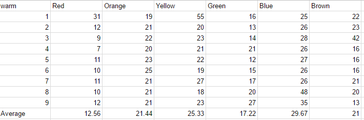
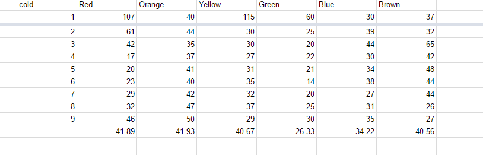

M and M project
Data Collection
What we did is we put a m and m in a glass of water then we put a stick in the water and spun it in circles till the color came off.
we wanted to see if differnet colors came of at different rates some were close but green seems to be consistanyl faster than the others.
We also split it into warm water and cold water.
Data Analysis
On the warm water the averages were around 20 to 30 and the colds averages were around 40.
The colder water the color came off slower. The warmer water the color came off faster.
Visuals


conclusion
I think that they do change at different rates but they arnt that big of changes except for the green one
it seems to come off way faster.